Learning how to build and program microcontrollers
A ToC Project C.O.D.E Class Developed by Yolanda M. Davis / @YolandaMDavis
Welcome To Class!
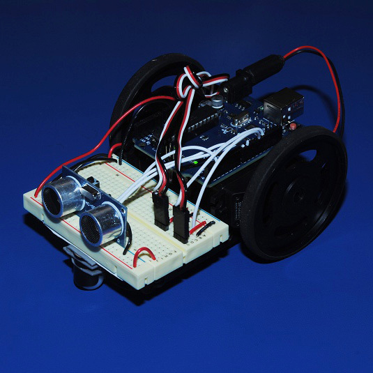
Today we will learn...
How to detect from and react to our environment using Electronics and Code
How to create and program a circuit with Sensors using Arduino
How these electronics are used in the Real World
Meet Your Partner!
Time to get to know your partner! Find out each other's name, school, and grade. Also pick a team name!
So Much to Code!
We can create programs that will run on lots of different devices...
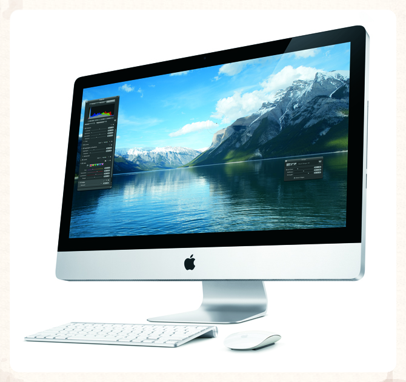
However these programs are limited in the things they can detect and what they can control.
We Need More Input & Outputs!
Few Inputs to Receive Data
Keyboard
Mouse
Touchscreen
Microphone
Wifi/Network
Few Outputs to Send/Display Data
Screen/Monitor
Speakers
Wifi/Network
What if programs could receive input and produce output beyond devices?
Programming with "Senses"
What if our programs could receive input and produce output like we do?
Human In <= (See, Hear, Touch, Smell, Taste)Human Out => (Speak, Move)
Receive more inputs and outputs have a greater ability to control things in the real world
Coding Beyond the Device
We are surrounded by electronics that use more "human-like" senses to receive information and communicate
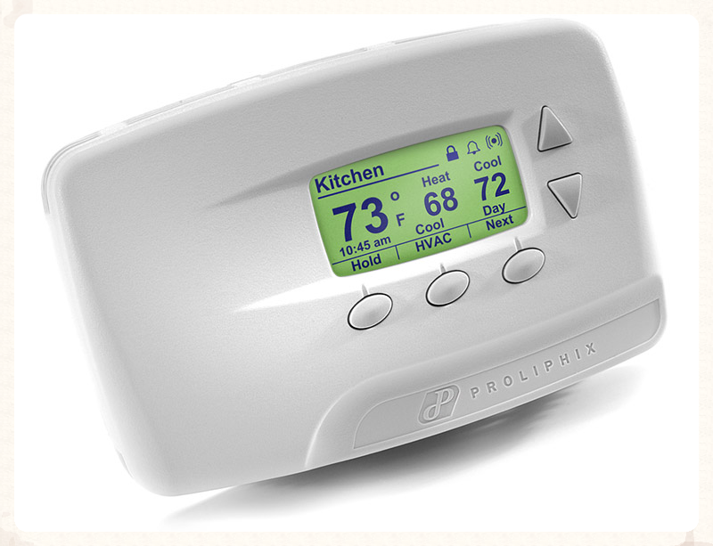
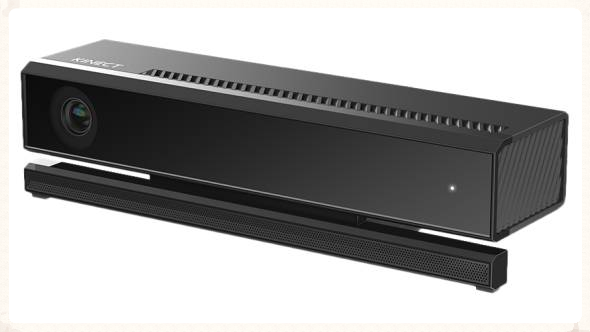
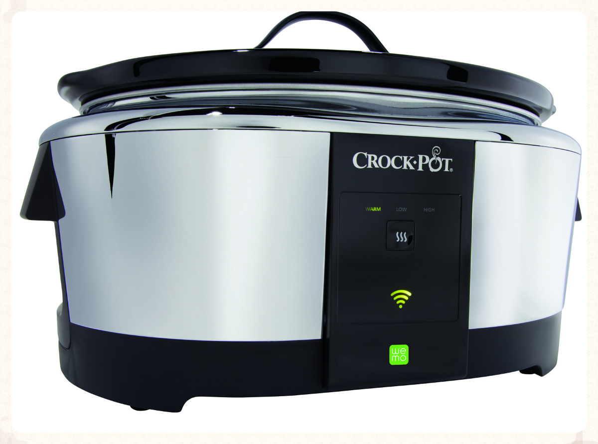
These senses also allows us to build and program complex devices that can perform more human-like behaviors
Introducing Arduino
An electronics platform that allows people to build interactive projects using both hardware and software
Has a board which can receive input from sensors that can detect changes in the environment and produce outputs
through controlling motors, lights and other devices
Also has a programming language where users can control Arduino's behavior
Arduino Up Close
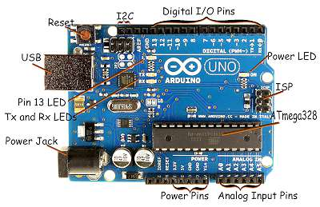
Learning about Electricity & Circuits are important to building and coding Arduino!
Circuits
"Think Circle" - A circuit is a line or movement that starts and finishes at the same place
Electrical Circuits create a looped path for electricity to flow. On the path can be sensors, diodes (LED) or motors that can
react as electricity flows through it
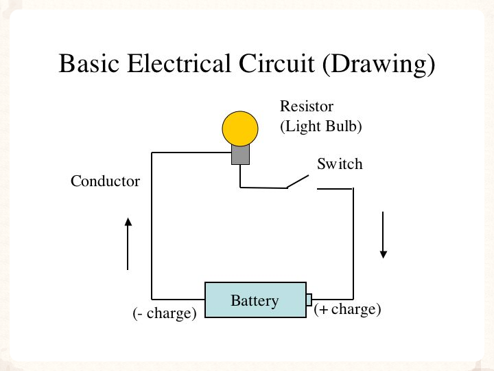
With Arduino we create electrical circuits to receive information through sensors and perform some action
Our First Prototype: Blink
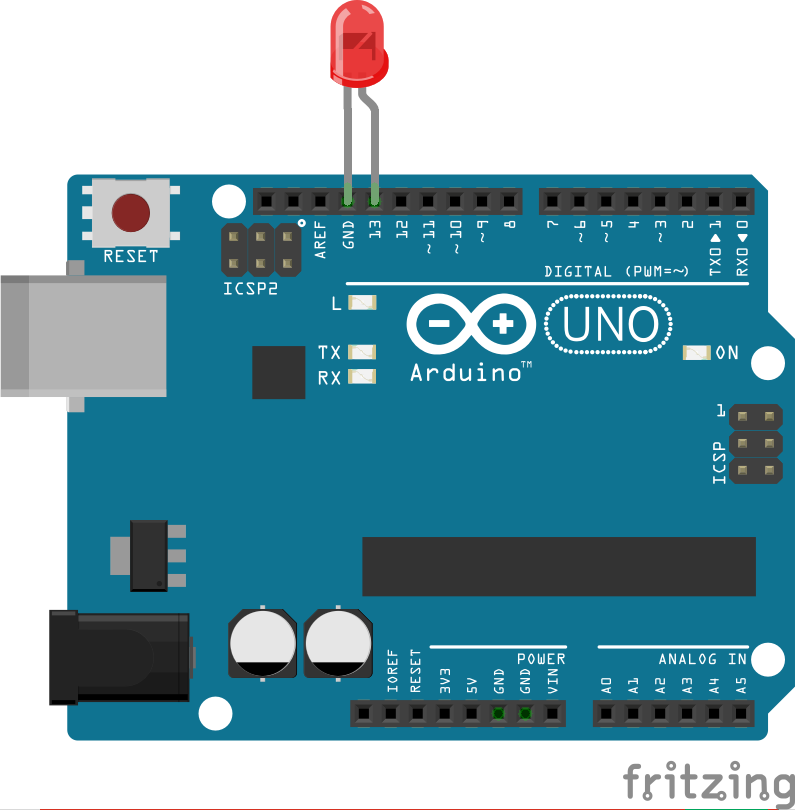
Single LED (Part A)
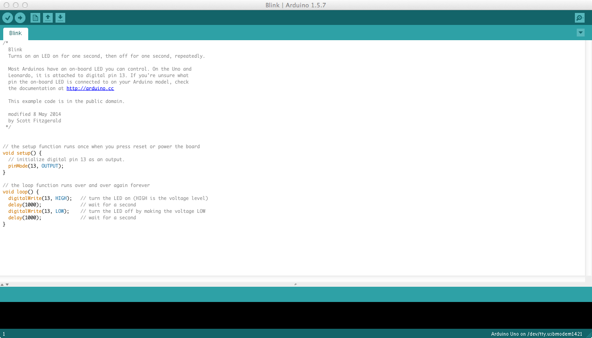
Blink Arduino Sketch
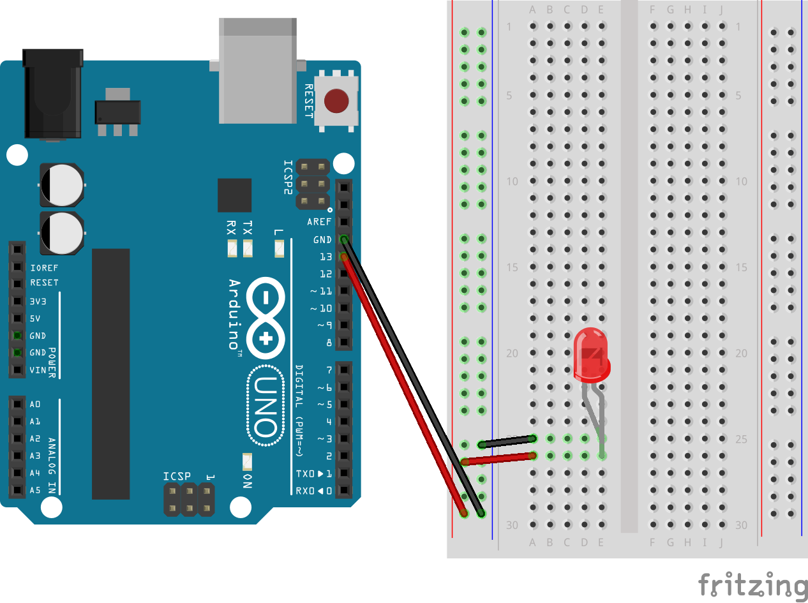
Single LED with Breadboard
Prototype II: Flashing Lights
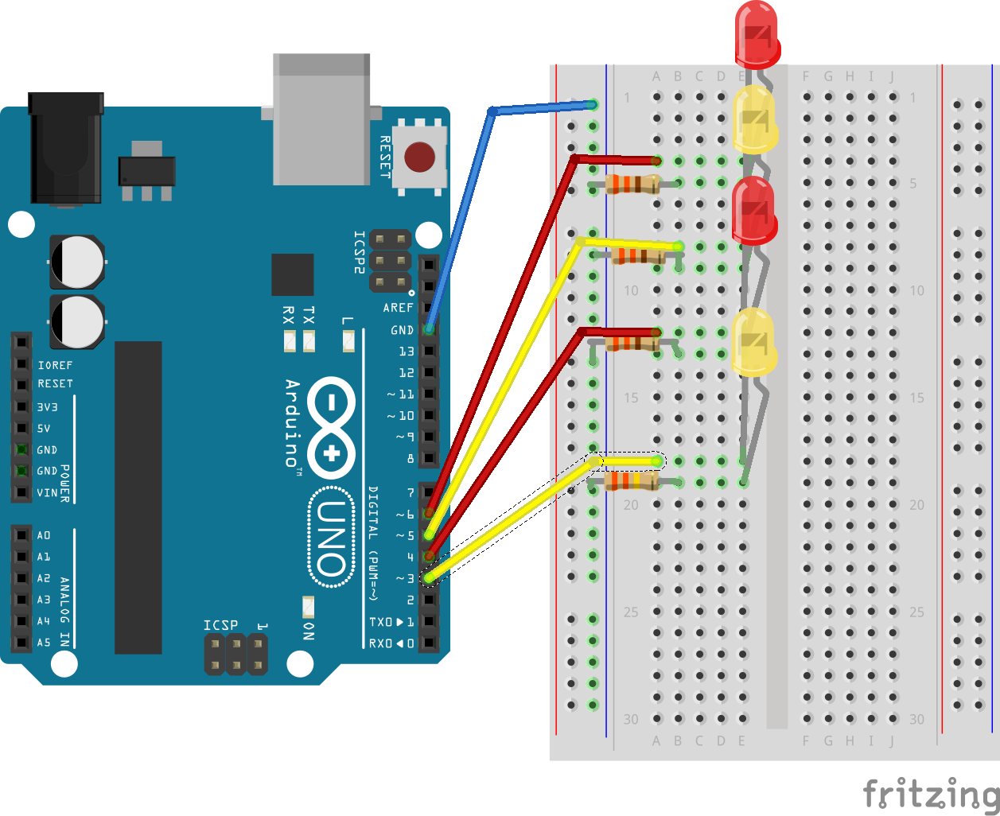
Single LED (Part A)
This projects uses resistors, components on a circuit that reduce or limit the amount of electricity
that flows on a path
They help prevent damage to our board or components and can aid in creating flow changes that can be detected in code
Resistors can be used individually or as part of a component. For example a photoresistor is a variable resistor
that will reduce or increase the amount of electricity flowing on a path based on how much or how little light it detects.